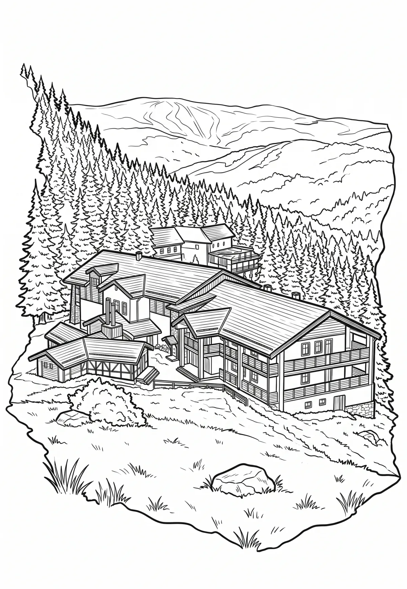

Plešivec
Plešivec (německy Pleßberg) je nefelinitová kupa v Krušných horách s nadmořskou výškou 1 029 metrů s příkrými svahy tvořenými suťovými poli, dva kilometry jihovýchodně od Abertam. Jedná se o denudační pozůstatek lávového příkrovu zalesněný smrkovou monokulturou. Na jižním úbočí hory stávala osada Plešivec založená v 18. století.
Více na Wikipedii